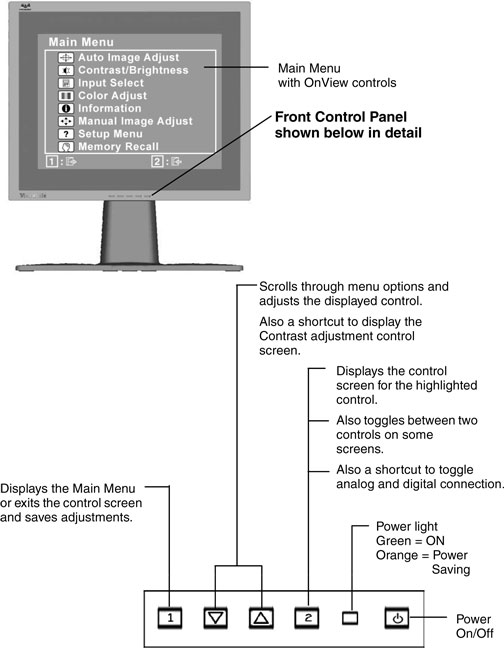
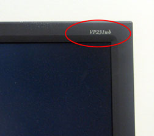
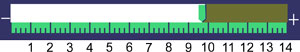
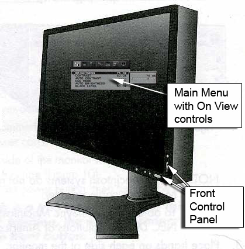
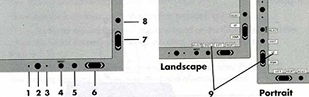
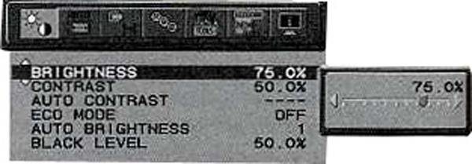

Operating Documentation
Direction 5670006, Rev# 1
Discovery MR750w GEM Service Methods
Module Version 3.0, Version Date 9/25/09
Operating Documentation |
| Required Persons | Preliminary Reqs | Procedure | Finalization |
|---|---|---|---|
| 1 | 0 min | 5 mins | 0 min |
The intent of this section is to adjust the monitor to a "default" condition to proceed with calibrations.
Setup the LCD monitor Input Priority according to Illustration 1.
Illustration 1: LCD Monitor Input Priority Setting

| NOTE: | In case "NO D-sub" is displayed with black window and the image does not appear on the monitor, Press the “ctrl + Alt + Backspace” keys simultaneously. |
Refer to Illustration 2 for Control locations and functions.
Illustration 2: ViewSonic VP231wb and VP2330wb on View Controls

Look in the upper-right corner of the front of your monitor to determine the model number. See Illustration 3.
Illustration 3: Locating Monitor Model Number

Make a note of the model number.
To display the Main Menu, press button [1] (see Illustration 4).
Illustration 4: Main Menu

| NOTE: | All OnView menus and adjustment screens disappear automatically after about 30 seconds. |
Modify the RGB setting by navigating to Color Adjustments -> User Color.
(For VP2330wb) On the VP2330wb monitor, numeric values are used for adjustments. Calibrate your monitor to match the settings in Table 1.
Table 1: Required Settings
| Contrast/Brightness | |
| Contrast | 60 |
| Brightness | 50 |
| Color Adjustments | |
| Hue | 50 |
| Saturation | 50 |
| Color Adjust | 6500K |
(For VP231wb) On the VP231wb monitor, a green slider is used for adjustments instead of numerical values. To calibrate the monitor count the major tick marks (there are a total of 14) to determine the proper slider location (see Illustration 5).
Illustration 5: On-screen Adjustments

Refer to Table 2 for Monitor Settings.
In Illustration 5 the slider is set to 9.75.
Table 2: Required Settings (to interpret the numerical values see Illustration 5)
| Contrast/Brightness | |
| Contrast | 9.0 |
| Brightness | 9.75 |
| Color Adjustments | |
| Hue | 7.0 |
| Saturation | 8.5 |
| R | 12.5 |
| G | 12.0 |
| B | 11.25 |
Calibrate your monitor to match the settings in Table 2.
See Illustration 6 and Illustration 7 for control locations and functions.
Illustration 6: NEC LCD2490WUXi / LCD2490WUXi2 on View Controls

Illustration 7: Control Panel

| Name | Description |
|---|---|
| 1 Ambibright Sensor | Detects the level of ambient lighting allowing the monitor to make adjustments to various settings resulting in a more comfortable viewing experience. Do not cover this sensor. |
| 2 Power | Turns the monitor on and off. |
| 3 LED | Indicates that the power is on. Can be changed between blue and green in the Advanced On-Screen Manager (OSM) Control menu. |
| 4 Input/Select | Enters the OSM Control menu. Enters OSM sub menus. Changes the input source when not in the OSM Control menu. |
| 5 Exit | Exits the OSM sub menu. Exits the OSM Control menu. |
| 6 Left/Right* | Navigates to the left or right through the OSM Control menu. |
| 7 Up/Down* | Navigates up or down through the OSM Control menu. |
| 8 Reset/Rotate OSM | Resets the OSM back to factory settings. Pressing when the OSM is not showing rotates the OSM Control menu between portrait and landscape mode. |
| 9 Key Guide | The Key Guide appears on screen when the OSM control menu is accessed. The Key Guide will rotate when the OSM control menu is rotated. |
* The Left/Right and Up/Down buttons functionality is interchangeable depending on the orientation (landscape/portrait) of the OSM.
To display the main menu, press button <8>, see Illustration 8.
Illustration 8: Main Menu

Refer to Table 3 for Monitor Settings.
Table 3: Monitor Settings
| Monitor Settings | ||
|---|---|---|
| LCD2490WUXi | LCD2490WUXi2 | |
| Brightness: | 50% (or the allowable maximum value that is less than 50%) | 72.1% (or the allowable maximum value that is less than 72.1%) |
| Contrast: | 40.3% | 50.5% |
| Black Level: | 50% | 50% |
| Color Temp: | Native | Native |
Camera calibration may be required, if GE services the camera, refer to Camera Calibration procedure. If the camera is serviced by another provider, please have the customer contact the vendor to perform camera calibration.
To save the adjustments, press the [1] button.
To exit the menu, press the [1] button again.